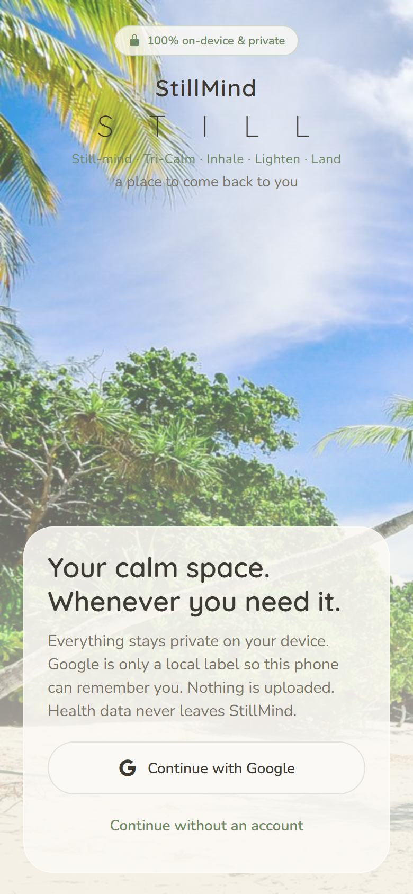
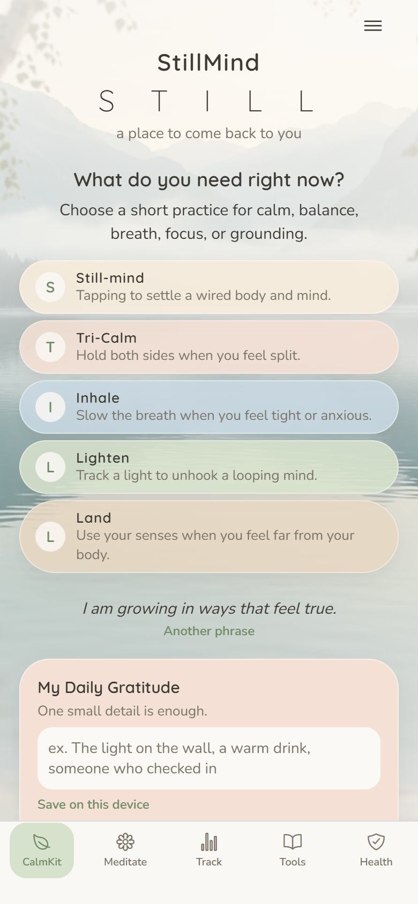
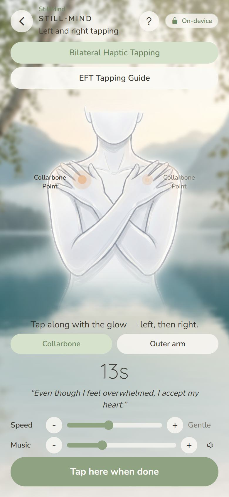
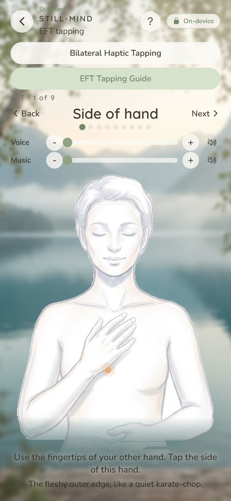
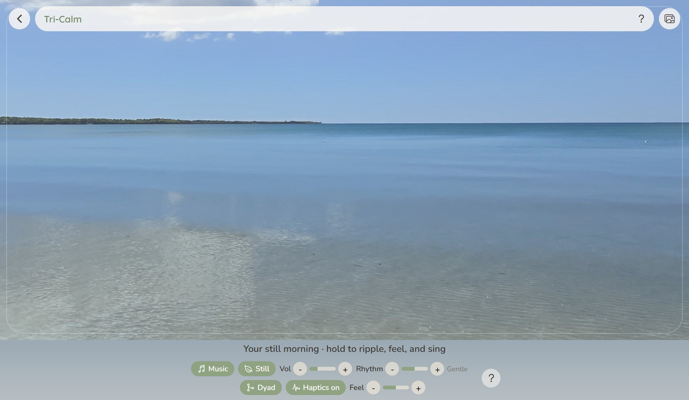
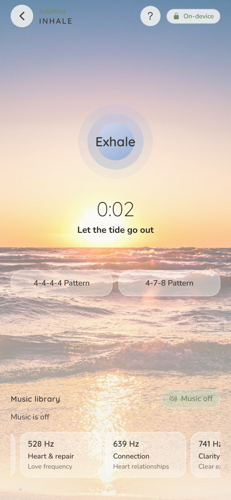
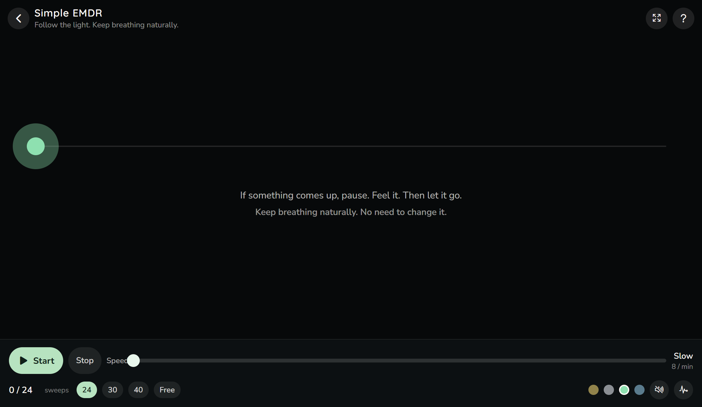

This page is the whole StillMind app as pictures and words. ChatGPT cannot click the live JavaScript app, but it can open this page and look at every screenshot. The most reliable way is to upload the pictures into the ChatGPT chat, or paste the image links listed at the bottom.
StillMind
Privacy-first mental-health calm space. Health data stays on the device. Nothing is uploaded. Not a replacement for therapy or emergency care.
Live app (browser only): https://jodilrigney.github.io/stillmind/
This visual tour: https://jodilrigney.github.io/stillmind/overview.html
Markdown with pictures: https://github.com/jodilrigney/stillmind/blob/main/public/overview.md
Opening

Opening. Continue without an account, or use Google as a local label only. Nothing is uploaded.
Home (CalmKit / STILL)

Home. Choose what you need. Tabs: CalmKit, Meditate, Track, Tools, Health.
S Still-mind — tapping to settle a wired body and mind
T Tri-Calm — hold both sides when you feel split
I Inhale — slow breathing when tight or anxious
L Lighten — track a light to unhook a looping mind
L Land — senses and body when you feel far from yourself
Still-mind (Reset)

Bilateral haptic tapping. Glow moves left, then right. Follow along.

EFT tapping guide. Nine points, one at a time, with optional voice.
Tri-Calm

Hold both sides of the water when you feel split. Music, rhythm, and haptics are optional.
Inhale

Paced breathing. Box 4-4-4-4 or 4-7-8. Optional tones. Keep it gentle.
Lighten vs Simple EMDR
Lighten is a forest firefly you follow. It is not Simple EMDR.
Lighten. One firefly over the river. Follow with the eyes. Head still.
Simple EMDR opens from Lighten. One clinic-style tracking light on a dark line. Not EMDR therapy with a clinician.

Simple EMDR. One light. Starts paused. Slow, about 8 sweeps a minute.
Starts paused. Default Slow: about 8 one-way sweeps per minute (~7 seconds to cross)